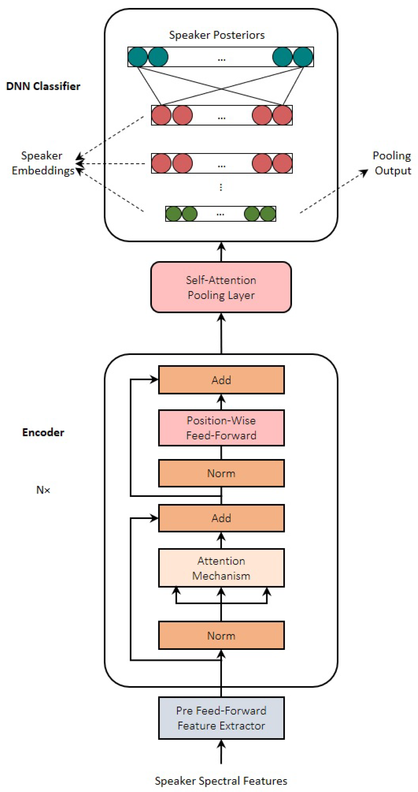

<section id="projects" class="section">
    <div class="container">
        <div class="section-title">
            <h2> Projects </h2>
        </div>
        
        <!-- Projects Grid -->
        <div class="projects-grid">
            <!-- Project 1: FIFA Player Value and Potential Prediction -->
            <div class="project-item course">
                <div class="project-card">
                    <div class="project-img">
                        
                    </div>
                    <div class="project-content">
                        <h3 class="project-title">FIFA Player Value and Potential Prediction</h3>
                        <p class="project-description">Established a PySpark ML regression pipeline to predict player values and potential from a FIFA dataset (220k+ records). Visualized results with Matplotlib, identified undervalued players (R²=0.92). Deployed on GCP with CUDA-accelerated distributed training, integrated PostgreSQL for data management, and reduced data prep time by 10% over pandas.</p>
                        <div class="project-tags">
                            <span>PySpark</span>
                            <span>Python</span>
                            <span>Matplotlib</span>
                            <span>GCP</span>
                            <span>SQL</span>
                            <span>Machine Learning</span>
                        </div>
                        <div class="project-links">
                            <!-- Optionally add links to code or report if available -->
                        </div>
                    </div>
                </div>
            </div>

            <!-- Project 2: NLP Research Project (already present) -->
            <div class="project-item research">
                <div class="project-card">
                    <div class="project-img">
                        
                    </div>
                    <div class="project-content">
                        <h3 class="project-title">Investigating between Attention Layer and Reasoning Ability in RoBERTa</h3>
                        <p class="project-description">A research project exploring how attention layer depth and width impact logical and mathematical reasoning abilities in transformer models, using the ReClor dataset of logical reasoning questions from standardized graduate admission examinations.</p>
                        <div class="project-tags">
                            <span>Natural Language Processing</span>
                            <span>Transformer Models</span>
                            <span>Attention Mechanisms</span>
                            <span>Logical Reasoning</span>
                        </div>
                    </div>
                </div>
            </div>
        </div>
    </div>
</section>
